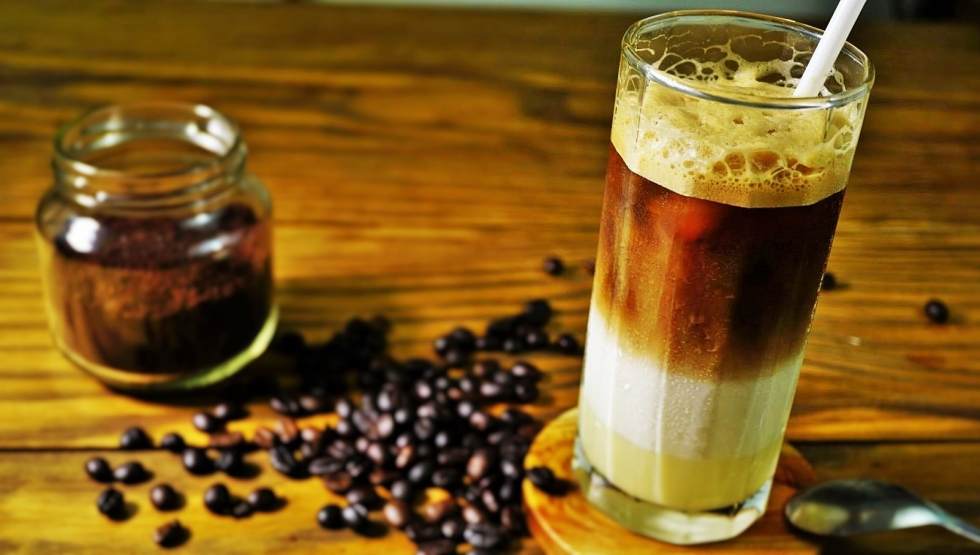

The best drinking of Vietnamese coffee, invented by Saigonese
From Hanoi to Saigon, Bac siu famously become best drink of choise for Foreinger and Local populate.
Bạc Xỉu [Saigon Style Coffee]
Compared to Cà Phê Sữa, Bạc Xỉu has the same ingredients.

However, the proportions are very different.
This delicious concoction is made (primarily) with a glass of condense milk, with a splash of Phin Filtered
coffee.
As a result, it has less caffeine, and is sweeter than Cà Phê Sữa.
INGREDIENTS
- 4 oz., hot water
- 2 tablespoons, Mr. Espresso Neopolitan Blend [#8 Grind]
- 4 oz., whole milk
- 3 tablespoons, condensed milk
INSTRUCTION
- Bring 5 oz of water to a boil.
- Add the ground coffee to a Vietnamese Phin filter
- Put it on top of the glass.
- Pour hot water over the coffee and let it drip for 5 minutes.
- After 5 minutes, remove the coffee filter and discard the coffee grounds.
EQUIPMENT
- 10 oz. Glass
- 1 cup Ice
- Mixing spoons
- Measuring spoons
- Vietnamese Phin Filter
- Cocktail Shaker